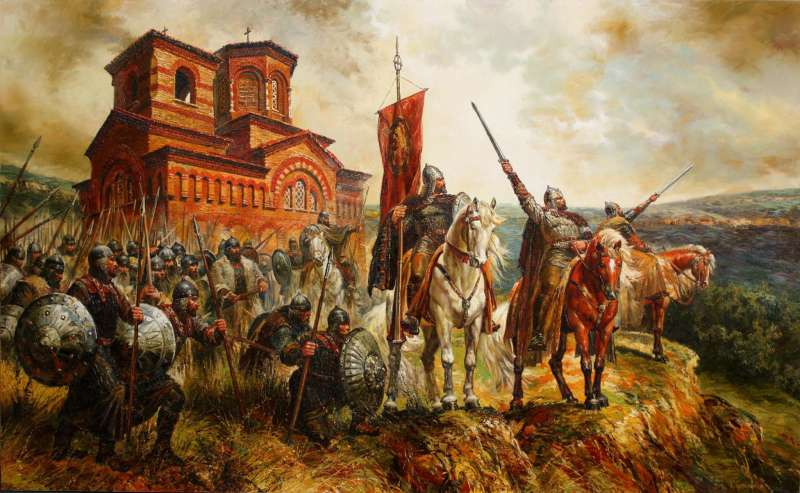

1185 - The revolt of Assen and Peter

The uprising broke out on October 26, 1185 - the feast of St. Dimitar Solunski, caused by the increase in
taxes, and ends with the creation of the Second Bulgarian Kingdom, ruled by the Asenevtsi dynasty. At the
head of the uprising are the two brothers Assen and Peter, who are dissatisfied with the emperor's refusal
to give them the requested pronia on Trapezitsa and the current Tsarevets. Under their leadership, the
uprising in 1186 failed, but after their retreat across the Danube, the following year the uprising became
organized and the victories were not long in coming. In a short time they liberated the main settlements of
Northern Bulgaria (excluding Preslav) and managed to penetrate the Stara Planina passes in Thrace.
The eldest of the two Assenevtsi, Peter (1187-1197), was proclaimed king.
In the summer of 1186, the Byzantine Emperor Isaac II Angelus decided to deal with the rebels and marched against
them with a large army. Unable to oppose him, Assen and Peter were forced to withdraw their troops north of the
Danube. After the return of the emperor to Constantinople, Assen and Peter again crossed into the Bulgarian lands
he was forced to make a truce with them, which officially recognized the restoration of the Bulgarian state north
of the Balkan Mountains. He already heads the state as Tsar Ivan Asen I.